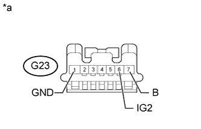

DTC B2786 No Response from Steering Lock ECU |
| DTC Code | DTC Detection Condition | Trouble Area |
| B2786 | LIN communication between the certification ECU and steering lock ECU stops for 10 seconds or more. |
|
| 1.CLEAR DTC |
Clear the DTCs (Click here).
| NEXT | |
| 2.CHECK FOR DTC |
Check for DTCs (Click here).
|
| ||||
| OK | ||
| ||
| 3.CHECK HARNESS AND CONNECTOR (CERTIFICATION ECU - STEERING LOCK ECU) |
Disconnect the G26 certification ECU connector.
Disconnect the G23 steering lock actuator assembly (steering lock ECU) connector.
Measure the resistance according to the value(s) in the table below.
| Tester Connection | Condition | Specified Condition |
| G26-29 (LIN) - G23-5 (LIN) | Always | Below 1 Ω |
| G26-29 (LIN) or G23-5 (LIN) - Body ground | Always | 10 kΩ or higher |
|
| ||||
| OK | |
| 4.CHECK HARNESS AND CONNECTOR (STEERING LOCK ECU - BATTERY AND BODY GROUND) |
|  |
Disconnect the G23 steering lock actuator assembly (steering lock ECU) connector.
Measure the resistance according to the value(s) in the table below.
| Tester Connection | Condition | Specified Condition |
| G23-1 (GND) - Body ground | Always | Below 1 Ω |
Measure the voltage according to the value(s) in the table below.
| Tester Connection | Condition | Specified Condition |
| G23-6 (IG2) - Body ground | Engine switch on (IG) | 11 to 14 V |
| G23-7 (B) - Body ground | Always | 11 to 14 V |
| *a | Front view of wire harness connector (to Steering Lock Actuator Assembly [Steering Lock ECU]) |
|
| ||||
| OK | |
| 5.REPLACE STEERING LOCK ACTUATOR ASSEMBLY (STEERING LOCK ECU) |
Temporarily replace the steering lock actuator assembly (steering lock ECU) with a new one (Click here).
| NEXT | |
| 6.CLEAR DTC |
Clear the DTCs (Click here).
| NEXT | |
| 7.CHECK FOR DTC |
Check for DTCs (Click here).
|
| ||||
| OK | ||
| ||